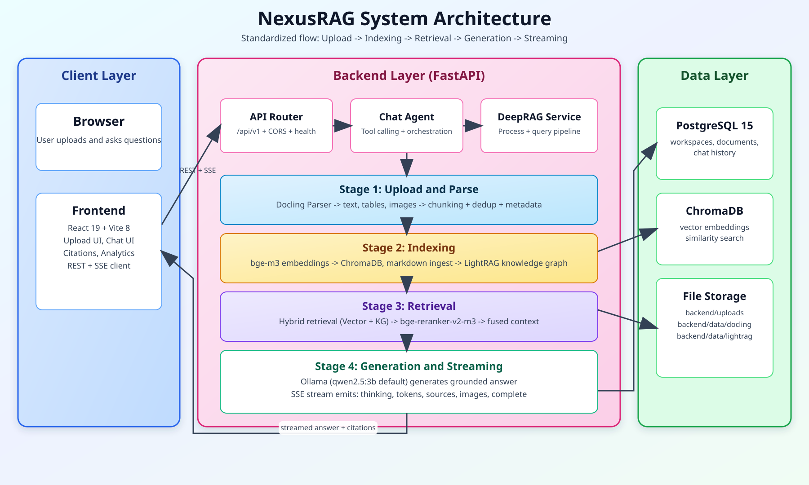

NexusRAG - Local-first RAG Pipeline with Python, ChromaDB, LightRAG & Ollama
Designed and developed a production-oriented local-first RAG platform for private document intelligence. The system enables high-quality Q&A over internal documents (PDF, DOCX, PPTX, HTML, TXT, MD) while keeping data in local infrastructure (no external cloud LLM required).
Project Objectives
- Data sovereignty: Keep enterprise documents and inference pipeline fully local.
- Accurate retrieval: Combine vector search + knowledge graph + reranking.
- Transparent answers: Return grounded responses with source citation and page metadata.
- Responsive UX: Stream model output in real time via SSE events.
End-to-end Architecture
- Frontend: React + Vite dashboard for workspace management, upload, and streaming chat UI.
- Backend: FastAPI service with modular APIs for documents, workspace, and RAG chat.
- Metadata DB: PostgreSQL for workspaces, document states, and chat history.
- Vector DB: ChromaDB for semantic indexing and similarity search.
- Knowledge Graph: LightRAG for entity-relation enhancement and contextual reasoning.
- LLM Runtime: Ollama (default: qwen2.5:3b) with local model orchestration.
Pipeline Design (4 Stages)
- Upload & Parse: Docling-based parsing extracts text, tables, images; then applies semantic chunking + dedup + metadata enrichment.
- Indexing: Chunks embedded using BAAI/bge-m3 and indexed into ChromaDB; markdown context is ingested into LightRAG graph.
- Hybrid Retrieval: Parallel retrieval from vector index and knowledge graph; candidates reranked with bge-reranker-v2-m3 for relevance precision.
- Generation & Streaming: Final context sent to Ollama; SSE emits thinking, token, sources, images, complete.
Technical Highlights
- Hybrid Retrieval Engine: Improved recall for relation-heavy and long-context questions.
- Cross-encoder Reranking: Increased answer faithfulness by filtering noisy candidates.
- Document Intelligence: Handles rich content (table/image-aware chunks) instead of plain text only.
- Citation-ready Responses: Supports source traceability for enterprise usage.
- Configurable Runtime: Tunable chunk size, top-k, thresholds, and timeout by environment variables.
Impact & Expected Outcomes
- Lower hallucination risk via retrieval-grounded prompt construction.
- Better trust through explicit source citation.
- Offline-friendly deployment suitable for internal and sensitive data environments.
- Scalable architecture for future multi-tenant and domain-specific expansion.
RAG System Architecture & Workflow

Complete RAG Workflow

Complete System Architecture